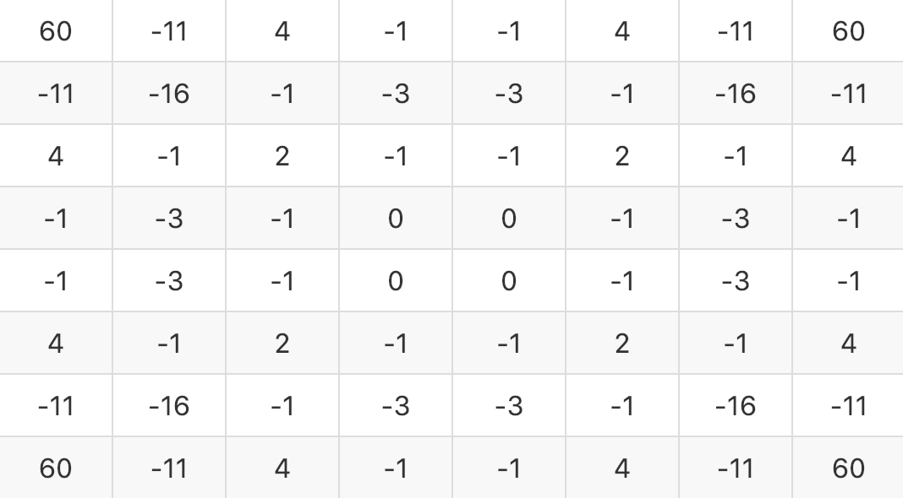

|
White: MiniMax algorithm Black: YOU |
|---|
MiniMax法を実装したオセロのAI.
ユーザが黒を打つと、2秒後にAIが白を打つ.
MiniMax法というのは「完全情報零和ゲーム」に適している.
「自分にとっての最善手は、相手にとっての最悪手」と言った考えに基づいており、
自分は評価値がMaxとなる手を選択し、相手は評価値がMinとなる手を選択すると仮定して先読みを行う.
今回、MiniMax法の深さは3としたので上の図のような流れで白は次に打つ手を決めている.
MiniMax法で使う評価値は、盤面のそれぞれのマスに点数をつけ、それらを加算したものをその盤面の評価値とした.
点数は以下のように設定した.

角をとると得点が高く、角の隣をとると得点が低くなるようにした.